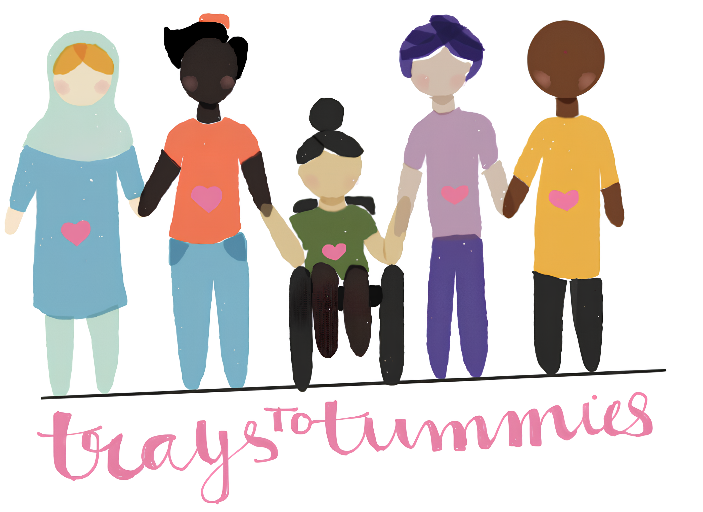

Trays to Tummies is a private nonprofit organization primarily founded to counter issues concerning food wastage and food waste, in our district and schools across the country. At Trays to Tummies, our mission is to collect as many wasted food items as possible from schools and redistribute them to various food pantries. Currently, we’re based in Heritage High School, but we do hope to expand to other schools in the district. As an organization, we sincerely hope to contribute to ending hunger and wastage in the best possible way!
Currently, our non-profit is based only in Heritage High School, where we started, but we are seeking to expand locally to expand our impact. We aspire to expand our cause to possibly other schools in our district by next year, however, we hope to first expand to Maus & Roach Middle school by next semester.